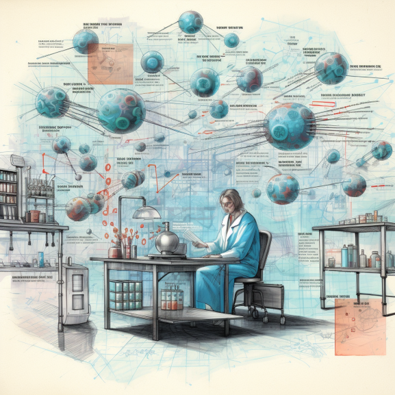
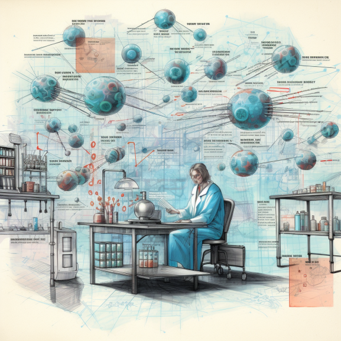
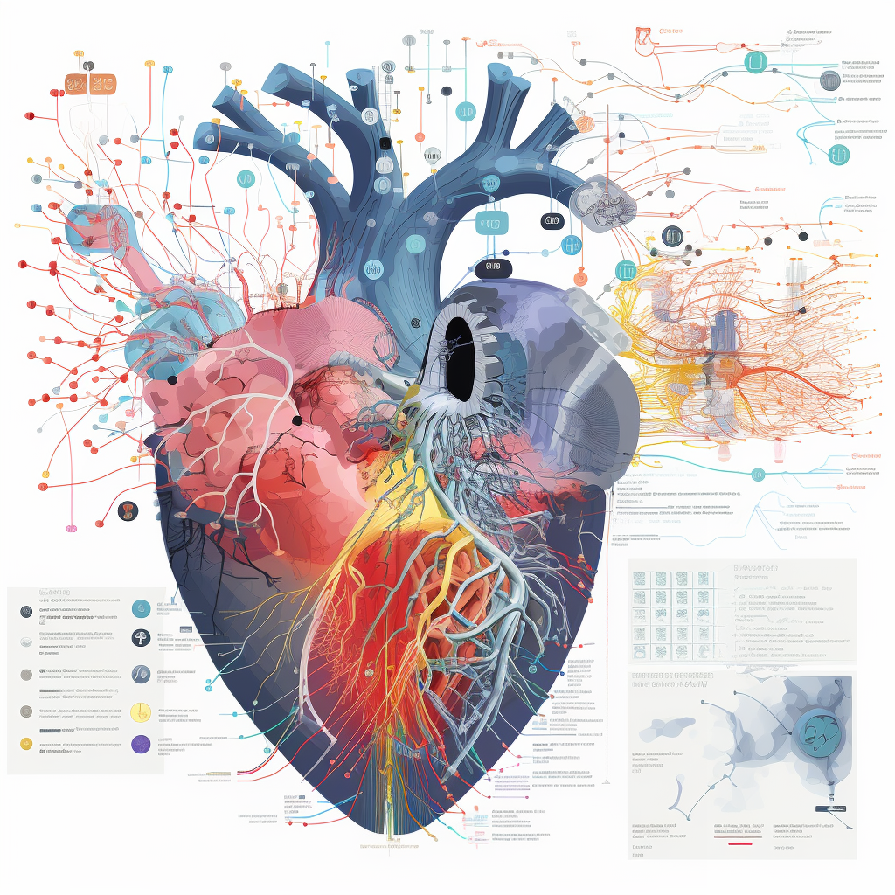
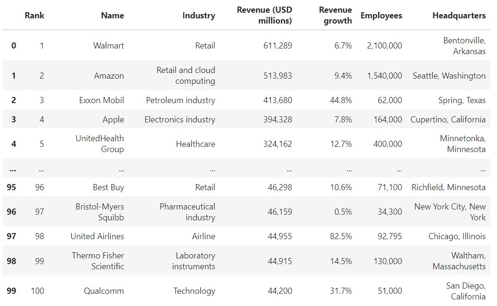

In this project, we analyze consumer complaints data related to various financial products, employing statistical models and trend analysis to evaluate its potential impact on a bank's financial stability. Through comprehensive examination and correlation studies, we aimed to identify patterns, anomalies, and potential risk factors embedded within the complaints data, offering valuable insights crucial for enhancing the bank's risk management strategies and overall financial resilience.
We are currently in the process of developing a research paper that utilizes Natural Language Processing (NLP) techniques to enhance customer experience and improve fraud detection, with the goal of publishing our findings.
 

This project involved analyzing my company’s revenue trends on a monthly and yearly basis, categorized by business units, specific projects, and customers. The goal was to gain actionable insights into revenue patterns and identify key performance drivers.
To achieve this, I utilized SQL to extract raw revenue data directly from the company’s system. The SQL queries were designed to accurately calculate revenue metrics, ensuring precision and reliability. The processed data was exported to Excel for further analysis and visualization.
In Excel, I performed data aggregation, categorization, and trend analysis. This included creating summary tables and visualizing revenue trends through charts and pivot tables. The project provided valuable insights into which projects and customers contributed most significantly to the company’s revenue, enabling more informed strategic decision-making.
This initiative improved reporting accuracy and offered a comprehensive overview of revenue performance across multiple dimensions, such as time, customer segmentation, and project scope. It also highlighted opportunities for growth and areas for improvement within the business.
In this project, we use Synthea's flu shot data to gain valuable insights for healthcare professionals seeking to assess their patients' immunization status effectively. We cleaned datasets using PostgreSQL and visualized trends using Tableau, revealing insights into immunization patterns among synthetic patients.

In this project, my team delve into leveraging machine learning techniques on CTG data to classify fetal health into Normal, Suspect, or Pathological categories. With a provided code template, we successfully build models capable of predicting heart failure based on 13 clinical features from a dataset encompassing 299 patient records, demonstrating the potential for predictive analysis in healthcare.

In this project, we utilize web scraping techniques to extract and compile comprehensive data from Wikipedia, specifically focusing on gathering information about the top 100 largest companies operating in the United States. Through systematic data extraction, we curate a detailed list encompassing key metrics and rankings, providing a valuable resource for comparative analysis, market insights, and strategic business intelligence.

Suzy's Tableau Dashboards for projects .